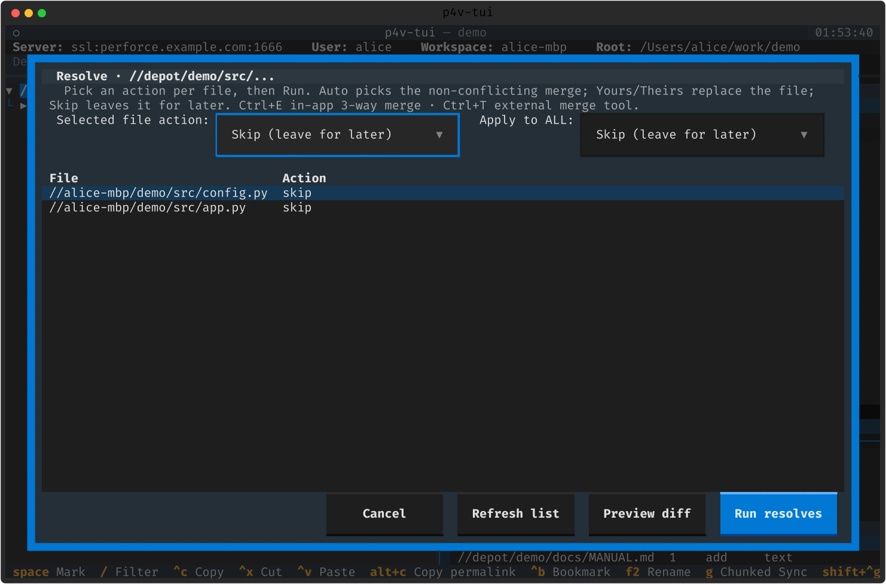

리졸브 · 3-way 머지
충돌을 해결합니다. 파일별 리졸브 피커, 그 자리에서 여는 인앱 3-way 머지 에디터, 외부 머지 툴.
리졸브 피커
충돌 파일은 맥락 메뉴의 Resolve Files 로. 파일별로 Auto / Yours / Theirs / Skip 을 고릅니다. 벌크로 한 번에 같은 액션을 줄 수도 있습니다.

인앱 3-way 머지 에디터 ➕
리졸브 피커에서 충돌 파일에 Ctrl+E 를 누르면 인앱 3-way 머지 에디터가 열립니다. p4 resolve -am 마커를 파싱해 헝크마다 y(Yours) / t(Theirs) / b(Base) / o(Both) 를 고르고, Enter 로 병합 결과를 씁니다. 외부 툴 없이 터미널에서 바로 해결합니다.
외부 머지 툴
[merge_tool] 을 설정하면 리졸브에서 Ctrl+T 로 외부 3-way 툴(P4Merge 등)을 띄웁니다. base/theirs/yours/merge 임시 파일을 넘기고, 툴이 닫히면 병합 결과를 읽어옵니다. 비정상 종료·저장 없이 닫으면 내 버전을 유지합니다.
[merge_tool]
command = "p4merge {base} {theirs} {yours} {merge}"
셸브도 여기서 함께 다룹니다 — 전체/부분 셸브(서브밋 전 파일 선택 피커)와 재리졸브(-f -c <CL> 스코프). 자세한 셸브 사이클은 4. 체인지리스트 참고.